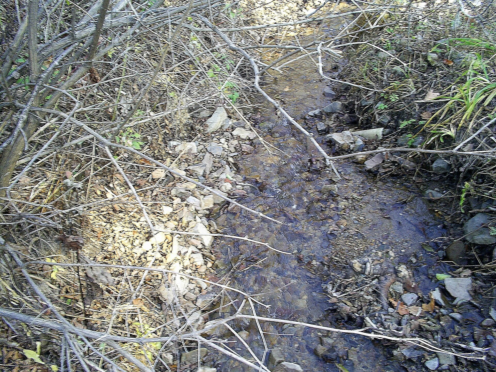

Визит-центр
Барабаш, национальный парк «Земля леопарда». Уточните пропуск: часть территории без разрешения не ходят. Начните с визит-центра, не с самодельной тропы.
День 07 из 10
День национального парка. Лес на границе, короткий ход к водопаду Неожиданный и разговор о кошке, которой больше нет нигде.
Барабаш, национальный парк «Земля леопарда». Уточните пропуск: часть территории без разрешения не ходят. Начните с визит-центра, не с самодельной тропы.
Короткий лесной ход к водопаду. После дождя тропа скользкая, обувь — не городская. Высота небольшая, сила места в каньоне и в том, что водопад внутри охраняемой земли.
Возвращение в сторону Владивостока. Завтра сафари-парк в Шкотовском районе, ночевать снова на юге нет смысла.
Национальный парк «Земля леопарда» создан в 2012 году на юго-западе Приморья и вобрал заповедник «Кедровая Падь». Это единственный в мире участок, где в дикой природе рядом живут дальневосточный леопард и амурский тигр. К апрелю 2024 года на охраняемых территориях края учёные фиксировали 129 леопардов. В начале века речь шла о нескольких десятках.
Водопад Неожиданный — камерная цель дня, не Ниагара. Он стоит того именно потому, что не превращён в смотровую с кафе. Идёте лесом, слышите воду раньше, чем видите слив, стоите столько, сколько хочется, и выходите. Парк имеет право закрыть подход: проверяйте утром, а не в комментариях прошлого лета.
Леопарда на тропе закладывать не надо. Увидеть его — редкость и не цель. Цель — понять устройство охраны: камеры, охранные зоны, запрет на свободный заезд, совместная работа с китайской стороной, потому что зверь границу не читает. Это и есть государственная работа, только без парадного фасада.
Не путайте этот день с завтрашним сафари-парком. Здесь животное дикое и почти невидимое. Там оно в просторном вольере и смотрит на вас с мостков. Оба места нужны, и именно в таком порядке: сначала лес, в котором зверя берегут, потом парк, в котором его можно рассмотреть.
Завтра те же звери, другая дистанция. Сафари-парк у Шкотово.
